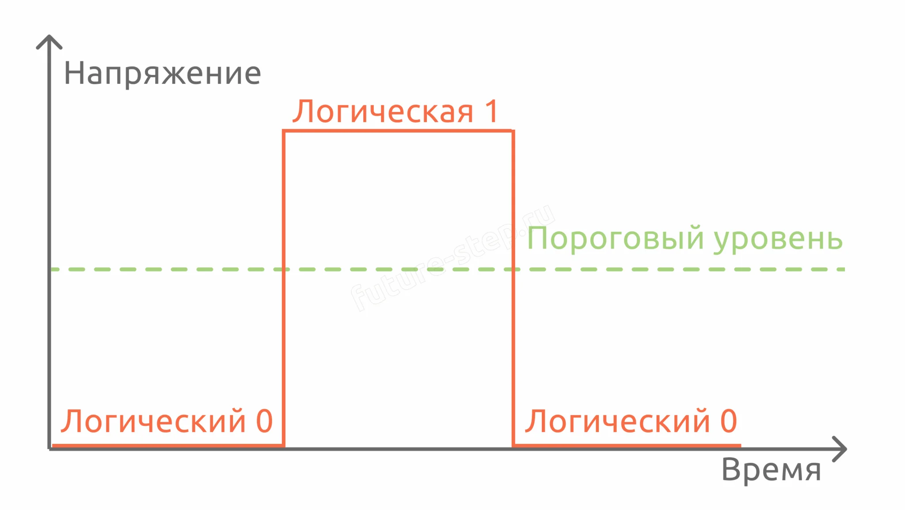
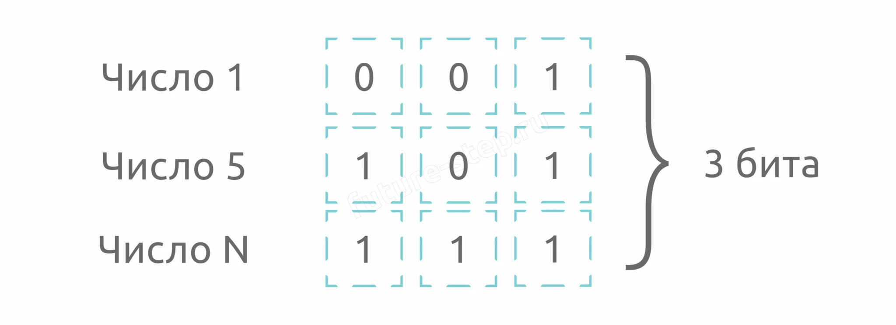

Теория · Двоичная система, биты и байты, формулы Хартли, объём текстового сообщения, составные идентификаторы, программные шаблоны
Любой современный компьютер — цифровое устройство. В отличие от аналоговых величин, которые могут принимать бесконечное множество значений, цифровые оперируют только фиксированным набором состояний. Основой цифрового мира стали два символа — 0 и 1. На деле это условные обозначения состояний электрического сигнала: напряжение выше заданного порога или ниже его.

Бит — минимальная единица измерения информации. Один бит может принимать одно из двух значений: 0 или 1.
С помощью комбинации нулей и единиц можно закодировать любое значение. Например, оценки от 1 до 5 в двоичной системе: 1 → 1, 2 → 10, 3 → 11, 4 → 100, 5 → 101. Для хранения всех пяти значений нужно минимум 3 бита — иначе максимальное значение не поместится.
Если выделено больше бит, чем нужно, старшие разряды заполняются незначащими нулями: число 3 (11₂) в трёх битах запишется как 011.

Пример: с помощью 3 бит можно закодировать N = 2³ = 8 различных символов (числа от 0 до 7). Если нужно закодировать 5 символов, то i = log₂5 ≈ 2,322. Но количество бит должно быть целым! Округляем всегда вверх: i = 3 бита.
⚠️ Правило округления при вычислении i: если результат log₂N — дробный, всегда округляем в большую сторону. Иначе не все символы алфавита поместятся в отведённое количество бит.
🔍 Мощность алфавита (N) — количество символов, которые могут использоваться для записи сообщения. Алфавит может включать цифры, буквы, специальные символы. Например, алфавит из 10 цифр + 52 латинских букв + 963 спецсимволов имеет мощность N = 1025.
Иногда в задании нужно закодировать не символ алфавита, а число из заданного диапазона. Например, «номер подразделения — целое число от 1 до 1200». В этом случае:
Номер подразделения от 1 до 1200. Количество значений: N = 1200 − 1 + 1 = 1200.
log₂1200 ≈ 10,23 → i = 11 бит.
В байтах: 11 / 8 = 1,375 → 2 байта (округляем вверх).
Байт — минимальная адресуемая единица памяти. На современных компьютерах 1 байт = 8 бит. Нельзя сохранить «3 бита информации» — компьютер выделит целый байт.
| Единица | Формула перевода в биты |
|---|---|
| 1 байт | 8 бит = 2³ бит |
| 1 Кбайт | 2¹⁰ байт = 2¹³ бит |
| 1 Мбайт | 2²⁰ байт = 2²³ бит |
| 1 Гбайт | 2³⁰ байт = 2³³ бит |
⚠️ Бит (b) и байт (B) — разные единицы! Бит обозначается маленькой буквой «b», байт — большой «B». Интернет-провайдеры указывают скорость в битах/с (Мбит/с), а объёмы файлов — в байтах (Мбайт). 100 Мбит/с ≈ 12,5 Мбайт/с.
💡 Кибибайты и гибибайты: в международной практике приставки «кило», «мега» означают умножение на 1000. Для двоичных единиц (1024) ввели отдельные приставки: кибибайт (KiB), мебибайт (MiB), гибибайт (GiB). В ЕГЭ и российских учебниках принято использовать «Кбайт» = 1024 байта.
⚠️ Правило округления L: если при вычислении длины сообщения получилось дробное число, округляем в меньшую сторону. Например, если I/i = 2,322, то вместить 3 символа не получится — берём 2.
В некоторых задачах идентификатор состоит из нескольких независимых частей. Например: личный код + номер подразделения + дополнительная информация. Каждая часть кодируется отдельно:
💡 Ключевая особенность: нельзя сложить все символы и биты, а потом поделить на 8. Каждое поле округляется до целого числа байт по отдельности, потому что в памяти они хранятся независимо.
При решении задания 11 постоянно возникают дробные числа, которые нужно правильно округлять. Все правила собраны в таблице:
| Что вычисляем | Куда округляем | Почему |
|---|---|---|
| Вес символа i = log₂N | ⬆ Вверх | Иначе не все символы алфавита поместятся |
| Вес сообщения I (если «не более» памяти) | ⬇ Вниз | Иначе превысим отведённый объём |
| Вес сообщения I (если «более» / «не менее» памяти) | ⬆ Вверх | Иначе не удовлетворим условию «более» |
| Длина сообщения L | ⬇ Вниз | Дробное количество символов не вместить |
| Вес сообщения в байтах (всегда) | ⬆ Вверх | Память выделяется целыми байтами |
| Каждое поле составного идентификатора | ⬆ Вверх (независимо) | Поля хранятся раздельно, каждое в целых байтах |
💡 Ключевые слова в условии:
Если по условию найден вес символа i бит, то:
Для минимальной мощности: берём предыдущую степень двойки и прибавляем 1 — ровно столько, чтобы «перешагнуть» в следующий бит.
🔍 Пример: если i = 8 бит, то Nmax = 256, Nmin = 2⁷ + 1 = 129. Число 129 уже требует 8 бит для кодирования (128 ещё помещается в 7 бит).
Иногда нужно найти не объём, а количество объектов (пользователей, номеров, идентификаторов), которое можно сохранить в отведённом объёме памяти. Алгоритм:
В этом разделе собраны универсальные программные шаблоны для решения задач задания 11. Достаточно подставить данные из условия — и программа найдёт ответ. Все шаблоны используют функции из модуля math: ceil() (округление вверх) и log2() (логарифм по основанию 2).
Когда использовать: известны длина сообщения, количество сообщений и ограничение на общий объём. Нужно найти минимальную мощность алфавита.
# Что подставить: # L — длина одного сообщения (символов) # Q — количество сообщений # V_lim — ограничение на общий объём (байт) # Условие: > (более) или < (не более) — выбрать нужное в if from math import ceil, log2 L = 261 Q = 252_500 V_lim = 32 * 1024 * 1024 # перевод Мбайт → байты for n in range(1, 1000): i = ceil(log2(n)) V1 = ceil((L * i) / 8) V_all = V1 * Q if V_all > V_lim: # > для «более», < для «не более» print(n) break
Когда использовать: известны мощность алфавита, количество сообщений и ограничение на общий объём. Нужно найти минимальную длину сообщения.
# Что подставить: # N — мощность алфавита (сумма всех символов) # Q — количество сообщений # V_lim — ограничение на общий объём (байт) # Условие: > (более) или < (не более) — выбрать нужное в if from math import ceil, log2 N = 10 + 26 + 496 # мощность алфавита i = ceil(log2(N)) Q = 725 V_lim = 353 * 1024 # перевод Кбайт → байты for L in range(1, 1000): V1 = ceil((L * i) / 8) V_all = V1 * Q if V_all > V_lim: # > для «более», < для «не более» print(L) break
Когда использовать: известны параметры пароля, дополнительная информация и общий объём. Нужно найти максимальное количество пользователей.
# Что подставить: # L — длина пароля (символов) # N — мощность алфавита # extra — доп. информация на одного пользователя (байт) # V_total — общий доступный объём (байт) from math import ceil, log2 L = 9 N = 26 * 2 + 10 # буквы обоих регистров + цифры i = ceil(log2(N)) V1 = ceil((L * i) / 8) + 18 # пароль + доп. информация V_total = 1024 # 1 Кбайт = 1024 байта Q = V_total // V1 # целочисленное деление (округление вниз) print(Q)
Когда использовать: идентификатор состоит из нескольких полей, каждое кодируется независимо. Нужно найти объём одной из частей.
# Что подставить: # Для каждого поля: длина (L), мощность алфавита (N) # или диапазон чисел [a, b] → N = b - a + 1 # V_total — общий объём на один идентификатор (байт) # Найти: V_extra = V_total - V₁ - V₂ - ... from math import ceil, log2 # Поле 1: личный код N1 = 26 * 2 + 10 + 10 # буквы обоих регистров + цифры + спецсимволы i1 = ceil(log2(N1)) V1 = ceil((17 * i1) / 8) # Поле 2: номер подразделения [1, 1200] N2 = 1200 # b - a + 1 = 1200 - 1 + 1 i2 = ceil(log2(N2)) V2 = ceil(i2 / 8) V_total = 48 # всего байт на пропуск V_extra = V_total - V1 - V2 print(V_extra)
💡 Универсальное правило для всех шаблонов: если в условии «не более» — используйте знак < (или <= для нестрогого). Если «более» / «не менее» — знак > (или >=). В задачах на количество пользователей — целочисленное деление // (оно автоматически округляет вниз).